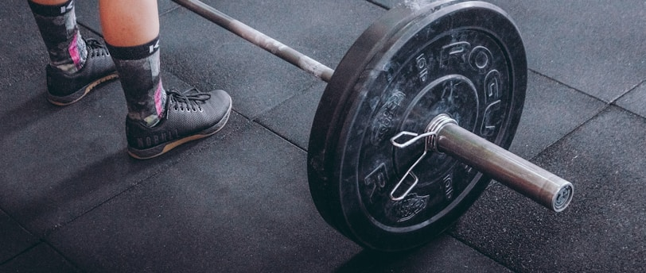
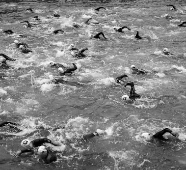
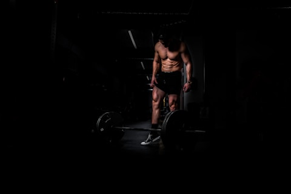
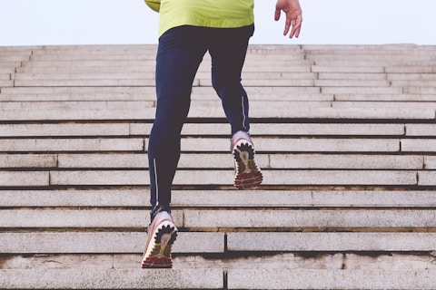

- Being singularly focused on one outcome or goal can result in the neglect of areas which can make you more well-rounded and balanced. Lean into your strengths, but don't forget to be proficient in other areas, because lacking in one particular discipline may become your Achilles Heel (literally and figuratively speaking).
- Be selective when it comes to who you look up to and idolize. You may admire what they have or represent, but are you willing to make the same sacrifices they made to get to where they are.
- Integrating strength and endurance training has significant benefits to overall health and longevity.
I turned thirty-five this year, and my definition of athleticism has evolved significantly over the years. I thrive on pushing my mind and body to their limits, but I've stepped over the line between peak performance and injury on many occasions. In this post, I share the ways I've modified my philosophy on training and how I've changed as an athlete. For those of you who don't know me, I've always been competitive. I enjoy team sports, in particular soccer, but transitioned to endurance events in my early twenties. I've competed in a number of full distance Ironmans (3.8km swim + 180km bike + 42km run), Half-Ironman, duathlons, marathons, half-marathons, and 10km races. I purely focused on developing a large aerobic engine and thought strength training would add unnecessary weight and bulk which I'd have to lug around for hundreds of kilometers. However, after years of focusing on endurance training, I started to see flaws in the way I assessed my athleticism and performance. My preparation for Ironman Korea in 2019 had been derailed due to a niggling pain in my left glute which I had gritted through for almost a year. After seeing a number of specialists, I was later diagnosed with Ankylosing Spondylitis, an inflammatory disease that, over time, can cause bones in my spine to fuse together. My doctor had indicated that the elevated levels of inflammation could be the result of excessive stress, lack of sleep, and/or consumption of particular foods. The symptoms could be further exasperated by poor posture, lack of mobility, and muscular imbalances. Ever since my diagnosis, I have continued to develop a better understanding of how to manage my symptoms while optimizing my athletic performance. I discovered that one of the challenges that athletes face competing at a high level in one type of sport is fragility. I had thought that by training and competing in triathlons and marathons, I was developing into a well-rounded athlete (I am a sub-par swimmer, a sub-optimal cyclist, and a decent runner). However, by focusing purely on endurance sports and building up a strong aerobic engine, I had neglected strength, agility, and speed. Lesson: Being singularly focused on one outcome or can result in the neglect of areas which can make you more well-rounded and balanced. Lean into your strengths, but don't forget to be proficient in other areas, because lacking in one particular discipline may become your Achilles Heel (figuratively speaking).

As a spritely young teenager, I looked up to Arnold Schwarzenegger, Sylvester Stallone, Jay Cutler (all body-builders) and the like for their massive builds and their chiseled physiques. Despite lifting weights and sucking down protein powder like a Hoover (for the Gen-Z's, it is the equivalent of a crappy Dyson Vacuum), I still looked like a pencil. I gave up on the notion that a guy with my build and genes could develop into one of these idols and instead focused on soccer and running. Little did I know that these fitness gods were juiced (i.e. using steroids) to the gills and the whole idea of naturally building these Zeus-like features was a pipe dream. With social media today, it's unfortunate that many young men are being influenced into thinking that 'enhanced' gym-rats using perfect lighting are the gold-standard for health, but this is a topic for another day. Lesson: Be selective when it comes to who you look up to and idolize. You may admire what they have or represent, but are you willing to make the same sacrifices they made to get to where they are.

During my search for different training protocols, I came across Nick Bare, the founder of [Bare Performance Nutrition (BPN)](https://www.bareperformancenutrition.com/collections/performance-nutrition?utm_source=google&utm_medium=paid_search&utm_campaign=BPN+Google+Ads+-+US+-+Paid+Search+-+Acquisition+-+Brand+-+Trademark+-+BPN&utm_adgroup=Bare+Performance+Nutrition&utm_keyword=bpn&mkwid=sUnCN806M|pcrid|618979384928|pkw|bpn|pmt|b|pdv|c|slid||product||pgrid|97588006937|cpgnid|9719308714|ptaid|aud-1833637046867:kwd-306904194605|adext||&maas=maas_adg_api_589101241047206773_macro_1_4&ref_=aa_maas&aa_campaignid=9719308714&aa_adgroupid=97588006937&aa_creativeid=ad-618979384928_ptaid-aud-1833637046867:kwd-306904194605_dev-c_ext-_slid-&gad_source=1&gclid=CjwKCAiAjrarBhAWEiwA2qWdCHTa6R5NWYzimY2ynYJfWjDJa2ta7nd18Whcekx_H_Iw43kyXgq5jBoC2D4QAvD_BwE). I'm sure he isn't the first to use the term "Hybrid Athlete", but he has been a large proponent of combining the benefits of strength and endurance training. I've been following him for a couple of years now and admire the fact that a guy of his size can manage to integrate speed, endurance, and strength. He recently completed the California International Marathon just under two hours and forty minutes, which is an incredible feat and is actually one of my goals for 2024. He shares his training journey on his podcast - The Nick Bare Podcast, which I recommend for other athletes. Over the last two years, I've adopted a similar approach to training, in which I've integrated both strength and endurance and have seen the following benefits:
- Muscular adaptations - I've been able to sustain longer training efforts as a result of the larger aerobic base (Zone 2 - defined as low heart-rate training) from endurance training, and I can perform prolonged efforts at a higher level of intensity from the progressive overload training (gradual increase in duration of exertion, intensity, amount of resistance, etc.)
- Reduction in repetitive-use injuries - Strength training stabilizes and protects joints that may not be otherwise utilized when purely training for one type of activity.
- Increased muscle recruitment - There are three types of muscle fibers (Type I oxidative fibers, Type IIa fast twitch- fatigue resistant fibers, and Type IIx fast twitch fibers.) Through strength and endurance training, you develop your body's ability to recruit the varying muscle fibers as each type of muscle begins to progressively fatigue.
- Faster recovery - Recovery is essential to muscle development and performance gains. When your body and muscles are fatigued, you tend to sleep/rest better. The excess blood flow and movement will also help reduce stress. While taxing different muscle groups in varying ways, it permits your resting muscle groups to rest and recover.
- Looking/feeling ripped - When I trained primarily for endurance events, it was obvious that I had under-utilized certain muscle groups. My arms used to look like I had toothpicks dangling from my body (imagine the gym-rate who always skips leg-day, but those were my arms). Strength training helps maintain the muscles not typically used in your specific sport of choice. When you look in the mirror, you look and feel more balanced. I know this is more aesthetically pleasing, but who are we kidding, we all want to look a little better in the mirror.
Lesson: Integrating strength and endurance training has significant benefits to overall health.


I've found there are five principles of Hybrid Athlete training:
Principle #1 - Identify your goals
Working towards specific goals are critical in staying focused and motivated. Whether you're trying to achieve a person best (PB), qualify for Boston, or complete a triathlon, identifying a target will guide your training. My goals for 2024 are:
- Marathon - sub 2 hour and 35 minutes,
- Ironman - sub 10 hours
- Qualify for The Boston Marathon (qualifying time 3 hours and 5 minutes) and New York Marathon (qualifying time 2 hours and 55 minutes)
Principle #2 - Assess proper volume and duration of efforts to achieve your identified goals Based on your identified goals, adapt your training to suit the direct needs associated with the specific goal event(s). You will also need to periodize your training depending on the amount of time before your event. For example, I am currently doing a significant amount of base training (low intensity, zone 2) to build an aerobic base. I'm spending roughly about a 40/60 split between strength and endurance training and as I approach my goal events, the ratio of strength training will decrease but will never diminish to zero.
Principle #3 - Focus on the incremental gains
I follow the theory developed by Dave Brailsford, the head of British Cycling, which emphasizes the importance of incremental gains. The methodology suggests that if you make 1% performance improvements over varying areas, you could reap significant overall rewards. The benefit of combining both strength and endurance into my training allows me to broaden the spectrum in which incremental gains can be achieved.
Principle #4 - Proper fuelling is key
Strength and endurance training is taxing on the body and requires adequate amounts of carbs, fats, proteins, vitamins and other essential nutrients. Over emphasis on reducing one specific category of food can inhibit your body's ability to recover from a hard training session and can leave you lethargic and potentially lead to other health complications. Seeking the advice of a nutritionist can helpful in ensuring you had the appropriate diet to help you achieve your goals.
Principle #5 - Rest and recovery is essential to developing the muscular adaptation
Neglecting appropriate rest and recovery can lead to extended periods of fatigue and possibly injury. Incorporating adequate periods of recovery may appear to be a waste of time and seem as though you're taking a step back in training. However, studies have shown that periodizing your training by incorporating a certain number of days or a week of lower volume or resistance after extended bouts of strenuous training can be beneficial and result in increased muscular adaptation.
In Summary
Being able to lift a bus or run for hours on end aren't really ever needed from a day-to-day perspective; however, I want to sustain a body which is functional and can operate at or near it's capacity. One of the main reasons why I maintain a high level of fitness is because I want to have a family one day. Having the ability to chase down my kids in a game of tag or toss them onto the bed is one reason why I want to maintain a robust body. Whatever your reasons are for wanting to feel stronger, have better endurance, or desiring that extra glance in the mirror, I believe Hybrid Athlete training is one of the most effective ways to achieving your goals. Let me know if you have any questions or want to connect on this topic. Thanks for reading!

Copyright 2025 ©The Dailyee
[Terms and Policies](https://www.thedailyee.com/privacy-policy) [https://www.facebook.com/thedailyee](https://www.facebook.com/thedailyee "Go to Facebook page")[https://www.instagram.com/the.dailyee](https://www.instagram.com/the.dailyee "Go to Instagram page")[https://www.linkedin.com/](https://www.linkedin.com/ "Go to Linkedin-in page")